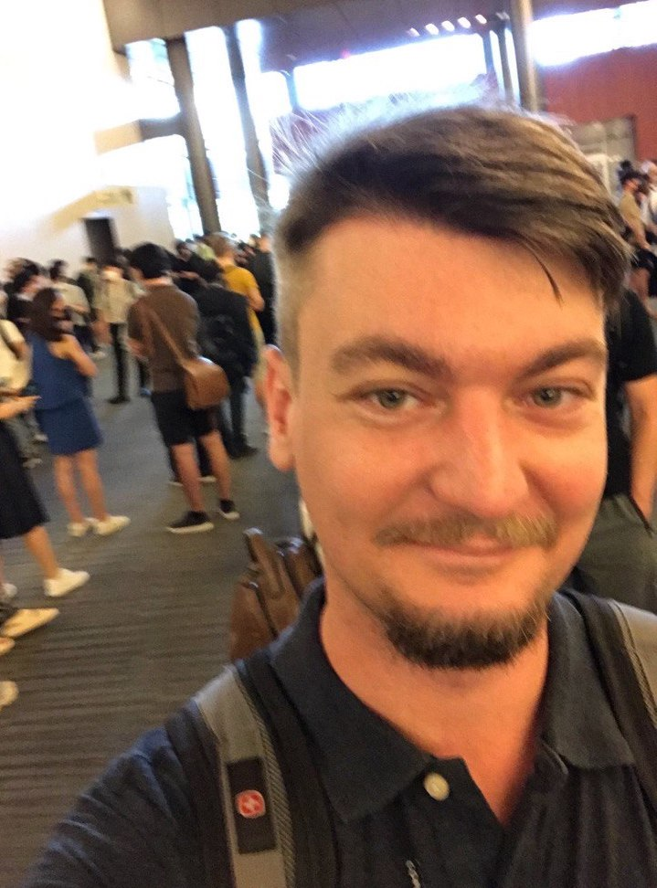
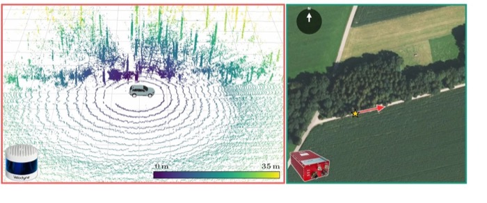
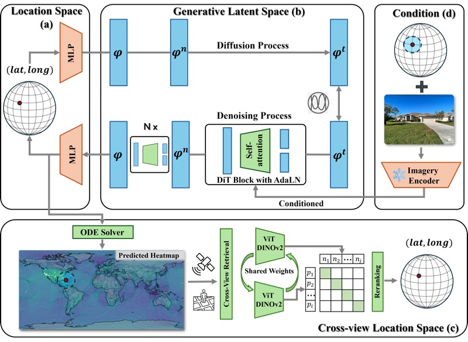
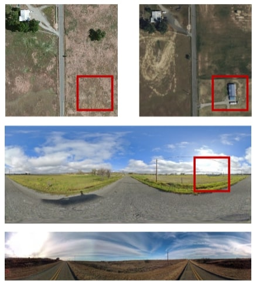
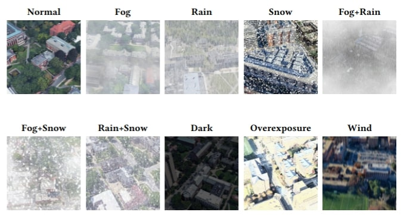
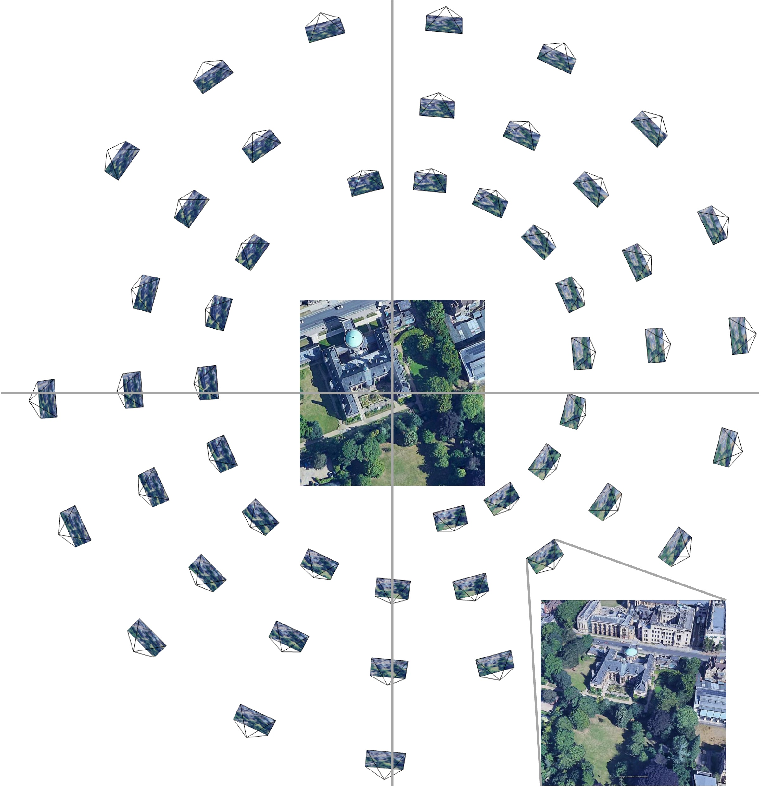
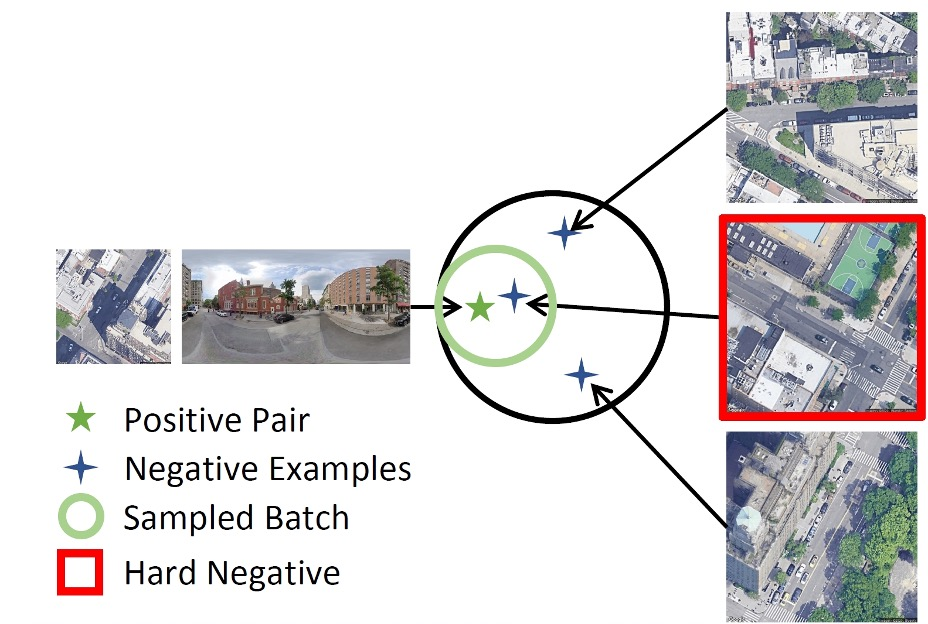
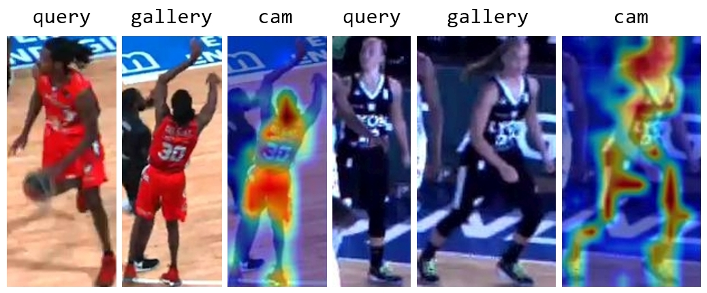

I am a Ph.D. candidate at the University of the Bundeswehr Munich and the TUM and recently submitted my thesis. My research focuses on cross-view geo-localization, i.e., localizing ground-level images by matching them against aerial and satellite imagery, and on the contrastive learning and sampling strategies behind such retrieval models. Recently, I have extended this to multimodal localization with camera and LiDAR in unstructured off-road terrain and to geo-localization for disaster response.
If you want to collaborate just write me a mail.

WACV2027
ISPRS J.
WACV2025W
ACMMM24
ACMMM23
ICCV23
ACMMM22